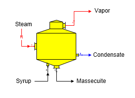
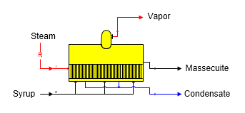
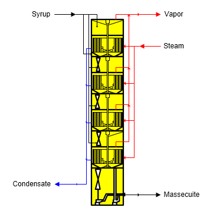

Sugars can simulate the operation of both batch and continuous pans. The calculations are the same for both types - only the shapes shown on the flow diagram are different.
Batch Pan The shape for a batch pan is shown in the figure below. Syrup goes into input port 0 and steam goes into input port 1 (zoom in on the shape to see the port identifiers - input port 1 is red). Steam/vapor flow into the pan is always a required flow. Massecuite leaves in output port 0 (black), vapor goes out port 1(red) and condensate goes out port 2 (blue).

Continuous Pan The shape for a horizontal continuous pan is shown in the figure below. Syrup goes into input port 0 and steam goes into input port 1 (zoom in on the shape to see the port identifiers - input port 1 is red). Steam/vapor flow into the pan is always a required flow.

VKT Continuous Crystallizer Continuous crystallization with a VKT system is shown in the figure below. Syrup goes into the top port and steam goes into the side port while condensate and massecuite leave at the bottom and vapor at the top. Data for individual cells is not considered; instead, only the condition of the massecuite leaving is needed for the model.

General Features Batch or continuous pan stations are used to grow sucrose crystals by using steam/vapor (heating flow) to evaporate water from a process flow stream. Only one process flow (syrup going to input port 0) and one heating flow (steam going to input port 1) is allowed to flow into a pan station. The heating flow must contain water vapor for the steam consumption calculation and all of the steam in is assumed to condense. Sugars will give an error message during the balance calculations if the heating flow does not contain a water vapor component. The heating flow into the pan is always a required flow (see the small ‘R’ on the steam flow line); that is, Sugars will calculate the quantity of steam flowing into the pan.
The crystal content of the massecuite leaving the pan is calculated from the supersaturation, percent dry substance (%DS) and temperature values entered on the Pan Properties window. The percent dry substance (%DS) of the massecuite is specified, or it can be calculated using the target mother liquor purity option. A color rise can occur in the pan for an increase in color of the syrup as it is converted to a massecuite. The temperature of the massecuite leaving the pan is controlled by either the value entered for the temperature of the massecuite out, or by the value entered for the saturation temperature of the vapor out.
Sucrose entrainment loss can occur in the pan from small droplets of syrup that are entrained in the vapor leaving the boiling syrup. Droplets that are not captured in an entrainment separator located inside the pan will leave with the vapor flowing out of the pan. These droplets contain sucrose that is lost unless the vapor is condensed in another station and returned to the process.
Sucrose solubility coefficients can be entered to control the crystallization that occurs in the pan if it is desired to use solubility coefficients that are different than the coefficients carried with the syrup. Normally, it is not necessary to enter values for the solubility coefficients on the Pan Properties window because the syrup coefficients are usually correct.
Heat loss can be entered for any heat loss that occurs due to convection, venting, steam-out, conduction, or radiation of heat from the pan to the surroundings. The % heat loss is for the amount of heat that is lost from the steam, or vapor, as heat is transferred to the syrup.
Vapor and condensate flows out of the pan cannot be made required flows (i.e., quantity of flow calculated by Sugars). Sugars will give a warning message if it detects that either the vapor and/or condensate flows out of the pan are required because a balance may not be possible if they are required by another station. Constructing a model that makes the vapor, and/or condensate flow required would result in an over specified model that has more conditions to be satisfied than is possible. The model would be over specified because the properties for the pan would conflict with the station that is requiring a quantity of vapor, or condensate, from the pan.
The vapor flow out of the pan can be a pressure feedback flow. For example, vapor flow from a pan going to a condenser can have the vapor pressure set by the internal pressure of the condenser and the pressure will be fed back to the pan.
The massecuite flow out of a pan can be a required flow. If it is required, the syrup flow into the pan also will be required. The quantity of syrup flow into the pan is not dependent on the properties of the pan; so, making the massecuite flow out a required flow does not cause a warning message.